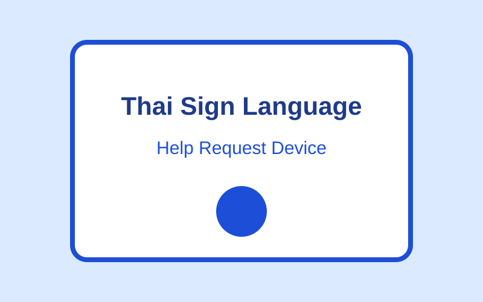
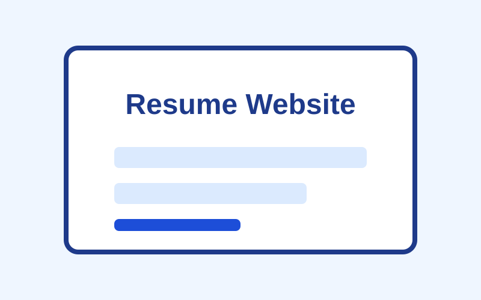

ระบบแปลภาษามือไทยเพื่อการขอความช่วยเหลือ
แนวคิดโครงงานวิศวกรรมไฟฟ้าสำหรับช่วยผู้บกพร่องทางการได้ยินในการส่งคำขอความช่วยเหลือพื้นฐาน เช่น การขอความช่วยเหลือระหว่างเดินทาง
- Electronics
- Programming
- Thai Sign Language
โครงงานและผลงานที่เกี่ยวข้องกับการเรียนและการพัฒนาทักษะ

แนวคิดโครงงานวิศวกรรมไฟฟ้าสำหรับช่วยผู้บกพร่องทางการได้ยินในการส่งคำขอความช่วยเหลือพื้นฐาน เช่น การขอความช่วยเหลือระหว่างเดินทาง

เว็บไซต์ Resume แบบ Static จำนวน 4 หน้า จัดทำด้วย HTML และ CSS พร้อม Responsive Design และ JavaScript สำหรับเมนูบนมือถือ
การใช้ Semantic HTML, Flexbox, CSS Grid และ Responsive Design
การจัดการไฟล์ด้วย Git และการนำเว็บไซต์ขึ้น GitHub Pages